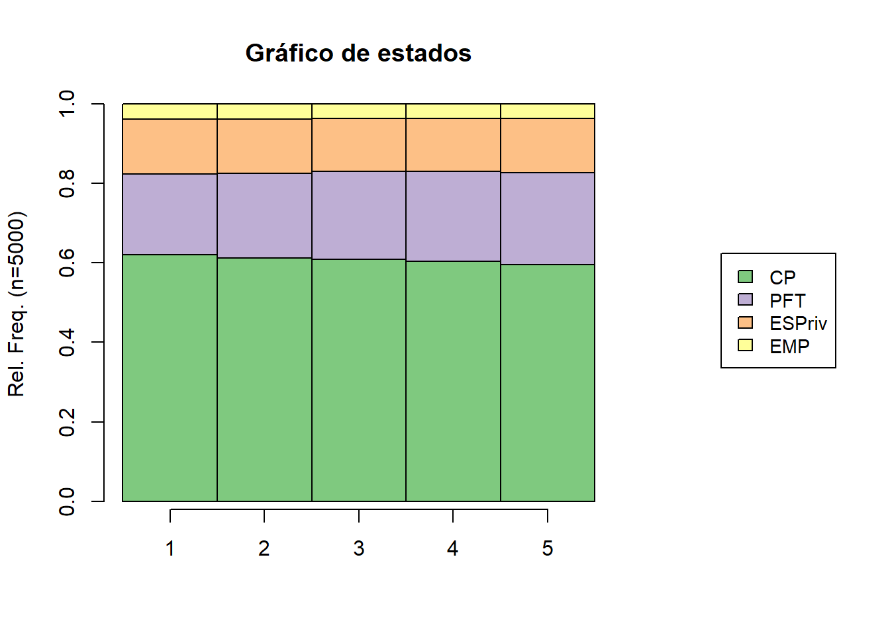
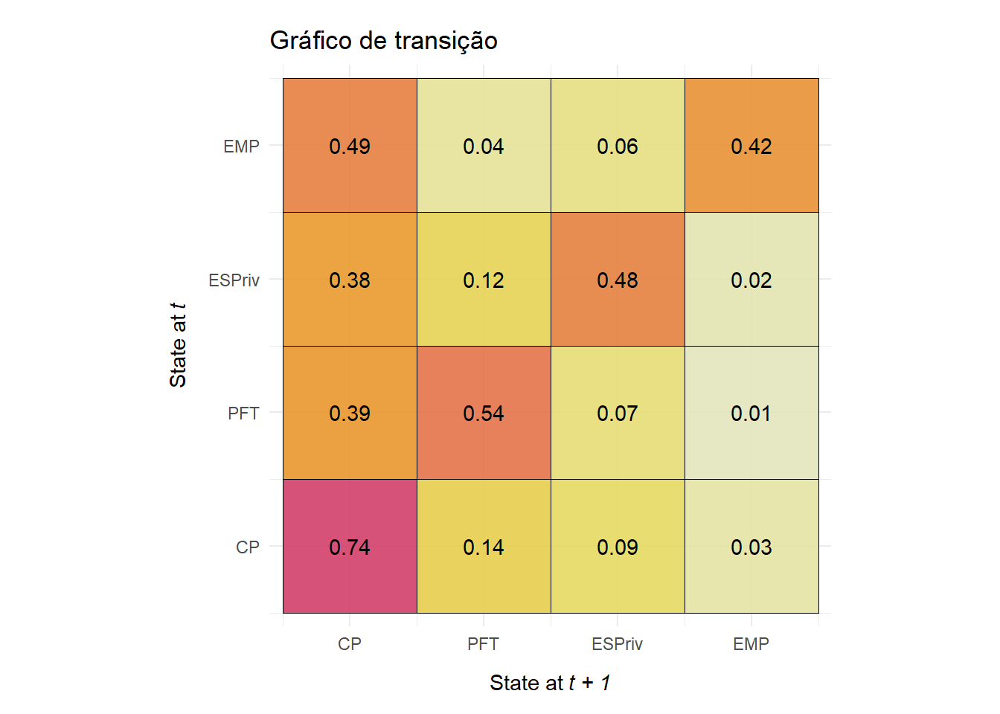

options(scipen = 999)
library(TraMineR)
library(tidyverse)
library(TraMineRextras)
library(FactoMineR)
library(questionr)
library(descriptio)
library(purrr)
library(stringr)
library(ggseqplot)
library(factoextra)Análise de Sequência
1. Análise de sequência
A análise de sequência contém três etapas principais:
Codificação das narrativas ou processos em sequências;
Mensuração das dissimilaridades de par a par de indivíduos;
Aplicação de técnica de redução de dimensionalidade (ex.: análise de cluster) para agrupar sequências similares.
Antes de adentrar nestas etapas, vamos trabalhar com o tratamento dos dados conforme script a seguir.
1.1. Tratamento dos dados
A base de dados utilizada neste script, é a de trabalhadores que participaram no máximo de cinco entrevistas em cinco trimestres seguidos.
Carregando pacotes necessários.
A base de dados utilizada neste trabalho possui id para grupos de indivíduos. No próximo bloco será criado um filtro para o ano de 2022 e 2023, para pessoas que possuem idade a partir de 14 anos.
Foi criada uma variável para identificar os indivíduos chamada ID_UNICO. Este ID_UNICO foi construído a partir da concatenação de algumas variáveis: UPA, V1008 (número de seleção do domicílio), V1014 (grupo de amostras), V2008 (dia de nascimento), V20081(mês de nascimento), V20082 (Ano de nascimento), V2007 (sexo), estrato.
#|warning: false
#|eval: false
# Carregando a base
data_1 <- vroom::vroom("~/GitHub/tcp/tcp_5trimestres.csv",
progress = FALSE,
show_col_types = FALSE)New names:
• `` -> `...1`Warning: One or more parsing issues, call `problems()` on your data frame for details,
e.g.:
dat <- vroom(...)
problems(dat)# Filtrando os anos de 2022 e 2023 e filtrando pessoas maiores que 14 anos
data_2022_2023 <- data_1 |>
select(id, Ano, Trimestre, UF,
UPA, Estrato,
V1008,V4012,V1014,
V1016, V2008, V20081,
V20082, V2007, V2009,
VD4001,VD4002) |>
filter(V2009 >= 14,
Ano %in% c(2022, 2023))
# Criando a variável ID_UNICO
data_id <- data_2022_2023 |>
mutate(ID_UNICO =
paste(UPA, V1008, V1014,
V2008, V20081, V20082,
V2007, Estrato, sep = "_")) |>
relocate(ID_UNICO, .before = Ano)
# Criando a variável Trimestre_Ano
data_id_unico <- data_id |>
mutate(Trimestre_Ano = paste(Trimestre,
Ano, sep = "-"),
.before = UF)Algumas categorias da variável ocupação (V4012) serão unidos. Todos os níveis serão renomeados com iniciais de suas respectivas descrição. As pessoas fora da força de trabalho (VD4001) e na condição de desocupados (VD4002) foram agregadas à variável V4012 com a finalidade de completar os estados nas sequências na posição de desocupação ou fora da força de trabalho. A tabela abaixo sintetiza estes tratamentos.
| Antes do tratamento | Após o tratamento | Abreviação |
|---|---|---|
|
Empregado do setor privado | ESPR |
|
Fora do trabalho | PFT |
|
Conta própria | CP |
|
Empregador | EMP |
Tratamento para renomear categorias e incluir a categoria de fora da força de trabalho.
#|eval: false
data <-
data_id_unico|>
mutate(V4012_ajust =
case_when(
V4012 == "Conta própria" ~ "CP",
V4012 == "Empregado do setor privado" ~ "ESPriv",
V4012 == "Trabalhador doméstico" ~ "ESPriv",
V4012 == "Empregado do setor público (inclusive empresas de economia mista)" ~ "ESPub",
V4012 == "Militar do exército, da marinha, da aeronáutica, da polícia militar ou do corpo de bombeiros militar" ~ "ESPub",
V4012 == "Trabalhador familiar não remunerado" ~ "TFNR",
V4012 == "Empregador" ~ "EMP"),
.after = Ano)
#Agregando a condição de força da força de trabalho e desocupado
data_0 <-
data |>
mutate(
ocupacao =
case_when(
VD4001 == "Pessoas na força de trabalho" &
VD4002 == "Pessoas ocupadas" ~
as.character(V4012_ajust),
VD4001 == "Pessoas na força de trabalho" &
VD4002 == "Pessoas desocupadas" ~ "PFT",
VD4001 == "Pessoas fora da força de trabalho" ~
"PFT"),
.after = V4012_ajust)De acordo com os resultados, observa-se que foram retirados aqueles indivíduos que foram empregados ou servidores públicos (ESPub) assim como o Trabalhador Familiar Não Remunerado (TFNR) em algum momento. Fizemos isso apenas para tentar diminuir a complexidade das análises.
#|eval: false
espub_tfnr <-
data_0 |>
filter(ocupacao == "TFNR" |
ocupacao == "ESPub")
espub_tfnr <- espub_tfnr$ID_UNICO
dados_tratados <- data_0 |>
filter(!ID_UNICO %in% espub_tfnr)No próximo bloco, serão selecionadas as variáveis de interesse (ID_UNICO, V1016 que identifica o trimestre, e ocupação que foi tratada anteriormente).
A partir da próxima subseção começamos a lidar com a análise de sequência propriamente dita.
1.2. Codificação das narrativas ou processos em sequências
Nesta etapa, os processos são codificados em sequências. Precisamos deixar os dados em um formato para rodar a análise de sequências.
#|warning: FALSE
#|eval: false
data_long <- dados_tratados |>
select(ID_UNICO, V1016,ocupacao)
#Transformando a estrutura de dados para wide
data_wide <- data_long |>
pivot_wider(names_from = V1016, values_from = ocupacao,
values_fn = list)
# Colocando as colunas em ordem de entrevista e para caracteres
data_ordem <- data_wide|>
relocate(ID_UNICO,`1`, `2`, `3`, `4`, `5`) |>
mutate(across(`1`:`5`, as.character))
# id_seq foi criada apenas para ter mais uma coluna de identificação
data_filtro <- data_ordem |>
filter(if_all(2:6, ~ . != "NULL")) |> # Remove linhas ond
filter(rowSums(across(2:6, ~ . != "CP")) < 5) |>
mutate(id_seq = row_number())Foram mantidos apenas aqueles indivíduos que possuem registros nos cinco trimestres, conforme o último bloco de códigos acima. Isso resultou em uma amostra de 46645 indivíduos que foram acompanhados ao longo de 5 trimestres entre 2022 e 2023.
#|echo: false
#writexl::write_xlsx(data_filtro, "~/GitHub/tcp/01_dados/dados_22_23_tratados.xlsx")
data_filtro <- readxl::read_excel("~/GitHub/tcp/01_dados/dados_22_23_tratados.xlsx")1.2.1. Separando uma amostra aleatória para alguns testes
O conjunto de dados é muito amplo, o que tem inviabilizado, devido à limitações computacionais, rodar a técnica para toda a base. Para superar tal limitação, trabalhamos com uma amostra de 5000 observações extraídas aleatoriamente da base original. Esta limitação acaba abrindo uma possibilidade que é viabilizar avaliações de outras amostragens para validar se os tipos de sequências se mantém.
Geraremos trêsamostras aleatórios de 5000 observações para testar os diferentes métodos de clusterização. A primeira amostra será usada para “treinar” e a segunda e terceira amostras serão aplicadas para “testar”.
set.seed(123)
# Define o total de observações
total_observations <- 46645
# Gera a primeira amostra aleatória de 5000 observações
sample1_ids <- sample(1:total_observations,
size = 5000,
replace = FALSE)
# Retira da população as observações da primeira amostra e gera a segunda amostra de 5000 observações
remaining_ids <- setdiff(1:total_observations,
sample1_ids)
sample2_ids <- sample(remaining_ids,
size = 5000,
replace = FALSE)
# Retira da população as observações das duas primeiras amostras e gera a terceira amostra de 5000 observações
remaining_ids <- setdiff(remaining_ids, sample2_ids)
sample3_ids <- sample(remaining_ids,
size = 5000,
replace = FALSE)
# Filtra as três amostras dos dataframes originais
amostra1 <- data_filtro[data_filtro$id_seq %in%
sample1_ids, ]
amostra2 <- data_filtro[data_filtro$id_seq %in%
sample2_ids, ]
amostra3 <- data_filtro[data_filtro$id_seq %in%
sample3_ids, ]1.2.2. Análise exploratória de sequências
Aqui observaremos algumas análises exploratórias sobre a sequência da amostra 1.
#|warning: FALSE
# Objeto de sequência
# Alfabeto
alfabeto <- c("CP",
"PFT",
"ESPriv",
"EMP")
# Rótulos
rotulo <- c("CP",
"PFT",
"ESPriv",
"EMP")
# Objeto do tipo sequencia
rownames(amostra1) <- amostra1$id_seqWarning: Setting row names on a tibble is deprecated.seq <- seqdef(amostra1[,c(-1,-7)],
alphabet = alfabeto,
labels = rotulo,
cnames = c("1", "2", "3", "4","5")) [>] 4 distinct states appear in the data: 1 = CP 2 = EMP 3 = ESPriv 4 = PFT [>] state coding: [alphabet] [label] [long label] 1 CP CP CP 2 PFT PFT PFT 3 ESPriv ESPriv ESPriv 4 EMP EMP EMP [>] 5000 sequences in the data set [>] min/max sequence length: 5/5# este objeto abaixo serve para juntar às bases originais
base_join <- cbind(seq,
amostra1$id_seq,
amostra1$ID_UNICO) |>
rename(id_seq_original = `amostra1$id_seq`,
ID_UNICO = `amostra1$ID_UNICO`) |>
mutate(id_pos_seq = row_number())As 5000 observações se tornaram 379 sequências.
seqtab(seq, idx=0) |>
nrow()[1] 379Pelo gráfico de estado abaixo, observa-se a prevalência de TCP em todos os períodos.
# Gráfico de estado
seqdplot(seq,
xtlab=1:5,
cex.legend=0.9,
main = "Gráfico de estados",
with.legend = "right")
O gráfico de índices mostra as 5000 sequências. Todavia, a visualização é prejudicada devido ao número de observações.
# Gráfico de índices
seqIplot(seq,
main = "Gráficos de índices",
with.legend = "right")Para superar tal limitação, separamos as 10 sequências mais prevalentes.
# As dez mais frequentes
seqfplot(seq,
main="Dez mais frequentes",
with.legend = "right")A tabela abaixo mostra informações das 40 sequências mais prevalentes.
seqtab(seq,
idxs = 1:40) Freq Percent
CP/5 1408 28.16
CP/1-PFT/4 196 3.92
PFT/1-CP/4 119 2.38
PFT/4-CP/1 113 2.26
CP/4-PFT/1 105 2.10
PFT/1-CP/1-PFT/3 97 1.94
PFT/3-CP/1-PFT/1 89 1.78
CP/1-PFT/1-CP/3 79 1.58
ESPriv/4-CP/1 77 1.54
CP/1-ESPriv/4 74 1.48
PFT/2-CP/1-PFT/2 74 1.48
CP/2-PFT/3 72 1.44
CP/4-ESPriv/1 72 1.44
CP/3-PFT/1-CP/1 69 1.38
CP/2-PFT/1-CP/2 66 1.32
ESPriv/1-CP/4 65 1.30
PFT/2-CP/3 57 1.14
CP/3-PFT/2 53 1.06
CP/1-ESPriv/1-CP/3 44 0.88
ESPriv/3-CP/1-ESPriv/1 42 0.84
ESPriv/2-CP/1-ESPriv/2 40 0.80
PFT/1-CP/2-PFT/2 40 0.80
CP/2-ESPriv/3 39 0.78
CP/3-ESPriv/1-CP/1 37 0.74
CP/3-ESPriv/2 36 0.72
EMP/1-CP/4 36 0.72
ESPriv/2-CP/3 36 0.72
PFT/3-CP/2 36 0.72
ESPriv/1-CP/1-ESPriv/3 35 0.70
PFT/1-CP/3-PFT/1 35 0.70
CP/2-ESPriv/1-CP/2 34 0.68
ESPriv/3-CP/2 32 0.64
CP/3-EMP/1-CP/1 29 0.58
PFT/2-CP/1-PFT/1-CP/1 28 0.56
CP/2-PFT/2-CP/1 27 0.54
PFT/2-CP/2-PFT/1 27 0.54
CP/1-PFT/3-CP/1 26 0.52
CP/1-EMP/1-CP/3 25 0.50
CP/4-EMP/1 25 0.50
CP/1-PFT/1-CP/1-PFT/1-CP/1 24 0.48A matriz de transição, apresentada abaixo, mostra a frequência de transição de um estado a outro, do momento t0 ao momento t1.
Observação, com base no eixo diagonal, que geralmente quem está uma categoria tende a permanecer na mesma categoria no momento posterior. Este fato é sobretudo válido para o TCP.
ggseqtrplot(seq,
dss = FALSE) +
ggtitle("Gráfico de transição") [>] computing transition probabilities for states CP/PFT/ESPriv/EMP ...
1.3. Mensuração das dissimilaridades de par a par de indivíduos
Para gerar agrupamentos, primeiramente definiremos a matriz de dissimilaridades através da função seqdist, usando método Optimal Matching (OM).
#|warning: false
# Definindo a matriz de dissimilaridades
couts <- seqsubm(seq,
method="CONSTANT",
cval=2) [>] creating 4x4 substitution-cost matrix using 2 as constant valuedissim <- seqdist(seq,
method="OM",
sm=couts,
indel=1.5) [>] 5000 sequences with 4 distinct states [>] checking 'sm' (size and triangle inequality) [>] 379 distinct sequences [>] min/max sequence lengths: 5/5 [>] computing distances using the OM metric [>] elapsed time: 0.22 secsA matriz de dissimilaridades mostra, par a par, o quanto que uma observação está distante da outra. Separamos apenas dez observações para exemplificar. Quanto maior os valores, maior disparidade das sequências
Os indivíduos 1 e o 2 possuem alta distância entre si (8 unidades). Já os indivíduos 1 e 6 possuem pouca distância entre si (0 unidades).
print(dissim[1:10,
1:10]) 1 2 3 4 5 6 7 8 9 10
1 0 8 2 4 6 0 0 0 2 6
2 8 0 9 7 6 8 8 8 8 6
3 2 9 0 2 6 2 2 2 3 4
4 4 7 2 0 6 4 4 4 5 3
5 6 6 6 6 0 6 6 6 7 7
6 0 8 2 4 6 0 0 0 2 6
7 0 8 2 4 6 0 0 0 2 6
8 0 8 2 4 6 0 0 0 2 6
9 2 8 3 5 7 2 2 2 0 7
10 6 6 4 3 7 6 6 6 7 0Vamos visualizar as sequências 1, 3 (custo 8) e 6 (custo 6), que são mais distantes.
amostra1 |>
filter(id_seq == 5 |
id_seq == 7 |
id_seq == 38) |>
select(-ID_UNICO,
-id_seq)# A tibble: 3 × 5
`1` `2` `3` `4` `5`
<chr> <chr> <chr> <chr> <chr>
1 CP CP CP CP CP
2 ESPriv ESPriv ESPriv PFT CP
3 CP CP ESPriv ESPriv ESPrivVamos visualizar as sequências 1, 3 (custo 2) e 6 (custo 0), que são mais parecidas.
amostra1 |>
filter(id_seq == 5 |
id_seq == 10|
id_seq == 41) |>
select(-ID_UNICO,
-id_seq)# A tibble: 3 × 5
`1` `2` `3` `4` `5`
<chr> <chr> <chr> <chr> <chr>
1 CP CP CP CP CP
2 CP CP CP CP PFT
3 CP CP CP CP CP 1.4. Aplicação de técnica de redução de dimensionalidade para agrupar sequências similares
O próximo passo consiste na aplicação da técnica de clusterização. Existem diversas técnicas e procedimentos que podem ser usados. Para nosso caso, aplicamos uma clusterização pelo método de k-means.
Antes de iniciar a clusterização, aplicamos a técnica de principal components analysis para reduzir o número de atributos em apenas duas dimensões. Isso é útil para visualizar os clusters, depois de formados, em duas dimensões.
É possível fazer a clusterização sem a PCA? Sim, aplicamos e o resultado não foi muito diferente. Então vamos manter a PCA, especialmente por facilitar a visualização em duas dimensões e por aprimorar o desempenho do processamento da clusterização.
# aplicando PCA
mds <- cmdscale(dissim, k=2) # Redução para 2 dimensões
mds_df_kmeans <- as.data.frame(mds)
colnames(mds_df_kmeans) <- c("Dim1",
"Dim2")Não existe clareza sobre o melhor número de clusters. De acordo com o elbow plot seria 3 clusters.
fviz_nbclust(mds_df_kmeans,
kmeans,
method = "wss")1.4.1. Testando com dois clusters
Vamos trabalhar com dois clusters inicialmente.
#|warning: false
set.seed(123)
mds_df_kmeans$sequencia_id <- 1:nrow(mds_df_kmeans)
kmeans_result <- kmeans(mds_df_kmeans[, c("Dim1", "Dim2")],
centers=2)
# 5. Adicione os resultados do cluster ao data frame
mds_df_kmeans$cluster <- as.factor(kmeans_result$cluster)
ggplot(mds_df_kmeans, aes(x=Dim1,
y=Dim2,
color=cluster)) +
geom_point(size=3) +
geom_label(aes(label=sequencia_id),
vjust=-1,
hjust=0.5,
size=3) +
labs(title="Gráfico de Dispersão com 2 Clusters",
x="Dimensão 1",
y="Dimensão 2") +
theme_minimal()Ao acessar as sequências do cluster 1 e 2, observa-se que o primeiro cluster possui sequências que variam entre trabalho por conta própria e trabalho empregado privado. Já o segundo cluster mostra um trabalhador por conta própria que migra com frequência para fora da força de trabalho.
# Gráfico de índices
seqIplot(seq,
group = kmeans_result$cluster,
border = NA,
cex.axis = 1.5,
cex.lab = 1.5,
sortv = dissim)
Os gráficos abaixo evidenciam as informações anteriores.
seqmtplot(seq,
group = kmeans_result$cluster,
border = NA,
cex.axis = 1.5,
cex.lab = 1.5,
sortv = dissim)1.4.2. Testando com três clusters
Agora vamos testar a clusterização dividindo a amostra em três grupos.
set.seed(123)
mds_df_kmeans$sequencia_id <- 1:nrow(mds_df_kmeans)
kmeans_result <- kmeans(mds_df_kmeans[, c("Dim1", "Dim2")],
centers=3)
# 5. Adicione os resultados do cluster ao data frame
mds_df_kmeans$cluster <- as.factor(kmeans_result$cluster)
ggplot(mds_df_kmeans, aes(x=Dim1,
y=Dim2,
color=cluster)) +
geom_point(size=3) +
geom_label(aes(label=sequencia_id),
vjust=-1,
hjust=0.5,
size=3) +
labs(title="Gráfico de Dispersão com 3 Clusters",
x="Dimensão 1",
y="Dimensão 2") +
theme_minimal()sObserva-se que o cluster 1 é caracterizado por ter prevalência de trajetórias que transitam entre o TCP e o emprego privado. O cluster 2 é caracterizado por ser um TCP persistente. O cluster 3 é caracterizado por ser um TCP transita com o perfil fora da força de trabalho.
seqIplot(seq,
group = kmeans_result$cluster,
border = NA,
cex.axis = 1.5,
cex.lab = 1.5,
sortv = dissim)Os gráficos abaixo evideciam os resultados dos gráficos anteriores.
seqmtplot(seq,
group = kmeans_result$cluster,
border = NA,
cex.axis = 1.5,
cex.lab = 1.5,
sortv = dissim)1.5. Rodando com amostra 2
seq2 <- seqdef(amostra2[,c(-1,-7)],
alphabet = alfabeto,
labels = rotulo,
cnames = c("1", "2", "3", "4","5")) [>] 4 distinct states appear in the data: 1 = CP 2 = EMP 3 = ESPriv 4 = PFT [>] state coding: [alphabet] [label] [long label] 1 CP CP CP 2 PFT PFT PFT 3 ESPriv ESPriv ESPriv 4 EMP EMP EMP [>] 5000 sequences in the data set [>] min/max sequence length: 5/5couts2 <- seqsubm(seq2,
method="CONSTANT",
cval=2) [>] creating 4x4 substitution-cost matrix using 2 as constant valuedissim2 <- seqdist(seq2,
method="OM",
sm=couts2,
indel=1.5) [>] 5000 sequences with 4 distinct states [>] checking 'sm' (size and triangle inequality) [>] 366 distinct sequences [>] min/max sequence lengths: 5/5 [>] computing distances using the OM metric [>] elapsed time: 0.66 secsmds2 <- cmdscale(dissim2, k=2) # Redução para 2 dimensões
mds_df_kmeans2 <- as.data.frame(mds2)
colnames(mds_df_kmeans2) <- c("Dim1",
"Dim2")
set.seed(123)
mds_df_kmeans2$sequencia_id <- 1:nrow(mds_df_kmeans2)
kmeans_result2 <- kmeans(mds_df_kmeans2[, c("Dim1", "Dim2")],
centers=3)
# 5. Adicione os resultados do cluster ao data frame
mds_df_kmeans2$cluster <- as.factor(kmeans_result2$cluster)
ggplot(mds_df_kmeans2, aes(x=Dim1,
y=Dim2,
color=cluster)) +
geom_point(size=3) +
geom_label(aes(label=sequencia_id),
vjust=-1,
hjust=0.5,
size=3) +
labs(title="Gráfico de Dispersão com 3 Clusters",
x="Dimensão 1",
y="Dimensão 2") +
theme_minimal()Gráfico de índice
seqIplot(seq2,
group = kmeans_result2$cluster,
border = NA,
cex.axis = 1.5,
cex.lab = 1.5,
sortv = dissim)Gráfico
seqmtplot(seq2,
group = kmeans_result2$cluster,
border = NA,
cex.axis = 1.5,
cex.lab = 1.5,
sortv = dissim) 1.5. Rodando com amostra 3
seq3 <- seqdef(amostra3[,c(-1,-7)],
alphabet = alfabeto,
labels = rotulo,
cnames = c("1", "2", "3", "4","5")) [>] 4 distinct states appear in the data: 1 = CP 2 = EMP 3 = ESPriv 4 = PFT [>] state coding: [alphabet] [label] [long label] 1 CP CP CP 2 PFT PFT PFT 3 ESPriv ESPriv ESPriv 4 EMP EMP EMP [>] 5000 sequences in the data set [>] min/max sequence length: 5/5couts3 <- seqsubm(seq3,
method="CONSTANT",
cval=2) [>] creating 4x4 substitution-cost matrix using 2 as constant valuedissim3 <- seqdist(seq3,
method="OM",
sm=couts2,
indel=1.5) [>] 5000 sequences with 4 distinct states [>] checking 'sm' (size and triangle inequality) [>] 361 distinct sequences [>] min/max sequence lengths: 5/5 [>] computing distances using the OM metric [>] elapsed time: 0.28 secsmds3 <- cmdscale(dissim3, k=2) # Redução para 2 dimensões
mds_df_kmeans3 <- as.data.frame(mds3)
colnames(mds_df_kmeans3) <- c("Dim1",
"Dim2")
set.seed(123)
mds_df_kmeans3$sequencia_id <- 1:nrow(mds_df_kmeans3)
kmeans_result3 <- kmeans(mds_df_kmeans3[, c("Dim1", "Dim2")],
centers=3)
# 5. Adicione os resultados do cluster ao data frame
mds_df_kmeans3$cluster <- as.factor(kmeans_result3$cluster)
ggplot(mds_df_kmeans3, aes(x=Dim1,
y=Dim2,
color=cluster)) +
geom_point(size=3) +
geom_label(aes(label=sequencia_id),
vjust=-1,
hjust=0.5,
size=3) +
labs(title="Gráfico de Dispersão com 3 Clusters",
x="Dimensão 1",
y="Dimensão 2") +
theme_minimal()Gráfico de sequência
seqIplot(seq3,
group = kmeans_result3$cluster,
border = NA,
cex.axis = 1.5,
cex.lab = 1.5,
sortv = dissim)Gráfico
seqmtplot(seq3,
group = kmeans_result3$cluster,
border = NA,
cex.axis = 1.5,
cex.lab = 1.5,
sortv = dissim)